MCBE 守卫者的两种生成机制
首先我们都知道，守卫者生成在海底神殿的25个hsa点位，而且基岩版的hsa是从上往下第一个hsa范围内有生成尝试的方块上进行生成尝试，如果后续检测通过，就可以生成出来，但是我们和曲奇最近在挖史的時候，挖出了一坨屎，就是守卫者从远古版本开始就保留下来的除了正常生成方式之外的另外一种生成方式，说实话，我们是真没想到这货居然到现在为止都还活着，而且好像听曲奇的说法变得比以前更抽象了，问题不大
那么就让我们分别讲一下两种生成机制吧，当然，重点是第二种，毕竟第一种，我们之前专栏里面有讲过，而且也很正常，问题不大
一.正常可生成方块上的守卫者生成机制
这个说实话，其实没什么好讲的，首先，我们之前已经差不多出过专栏讲过了，不过那个時候因为不知道还有这个第二种，所以就那个時候专栏只写了这一种，问题不大
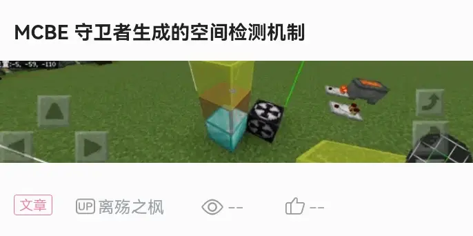
站内专栏 »那么这里就只简单说一下，这种就是在结构生成的范围内，从上往下找到第一个上方，可以进行生成尝试，并且空气检测通过的方块，关于结构生成的空气检测，可以看我们之前写的这个专栏，问题不大
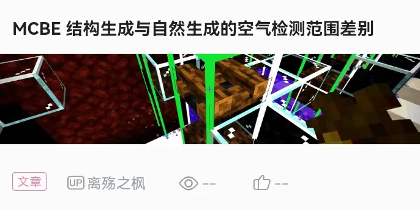
站内专栏 »总之的话，大概就是，会在结构生成的hsa范围内，从上往下找到第一个可生成尝试，并且上方空气检测通过的方块，然后进行守卫者的空间检测，如果空间检测通过的话，就会刷在这个方块上，如果只是空间检测未通过，但是空气检测等都通过了（比如生成点没倒水），那么也不会刷在下方，而是直接一直在上方生成失败，也就是刷不出来，问题不大
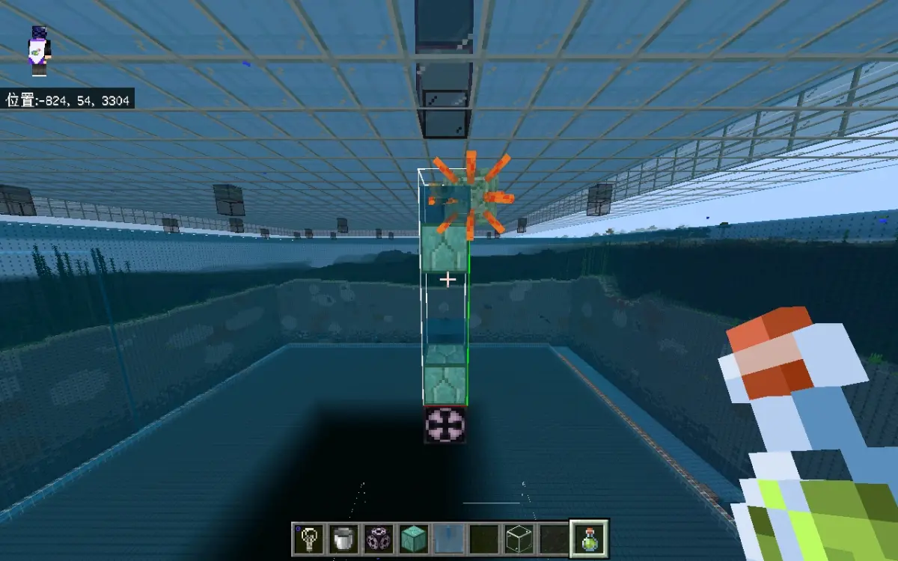
而且这种正常的可生成方块上的生成，对水的层数并没有要求，只要是水就行，一层两层或者多层都无所谓，也不像水鬼那样子，一层水和多层水会导致权重有差异之类的，总之，这种正常的可生成方块上的生成和其他的hsa基本上没什么差别，这里就不讲太多了，问题不大
二.非常规多层水生成
这个东西说实话，属于一个从远古版本就流传下来的屎山，基本可以追溯到那个打开的栅栏门上可以刷怪的远古版本了，这个说实话，现在还真可以做到类似的效果，因为这种生成方式，它对于底下的方块没有要求，它的要求实际上是分为两种第一种就是和上面那个一样常规hsa的生成方式的要求，但是除此之外，还有一种是至少要有两层水，而且这个水必须是水流或者水源而不能是含水方块，不管是不是真空气之类的都不可以，问题不大
总之就是满足第一种生成条件的時候可以进行一二种，但是只满足第二种的那个单独条件的時候，也可以只进行第二种，问题不大
这个怎么说呢？有点抽象，但是先给你们看一张效果图，问题不大
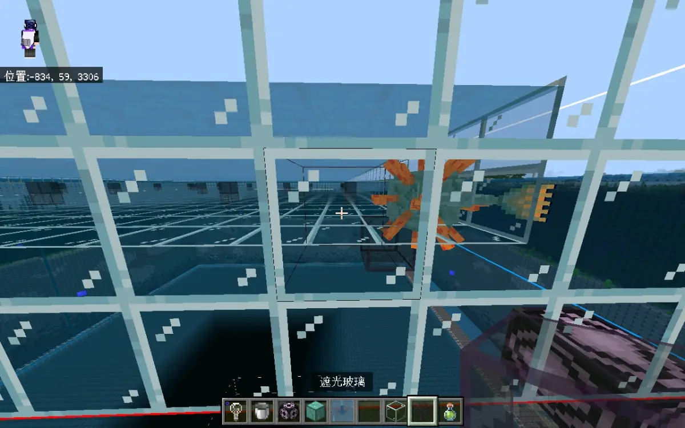
可以看到，这守卫者是直接生成在遮光玻璃上，但是我们都知道，遮光玻璃很明显不是一个可生成的方块，那这是为什么呢？实际上，这是因为守卫者进行了第二种生成方式，就是多层水生成，这个该怎么讲呢？
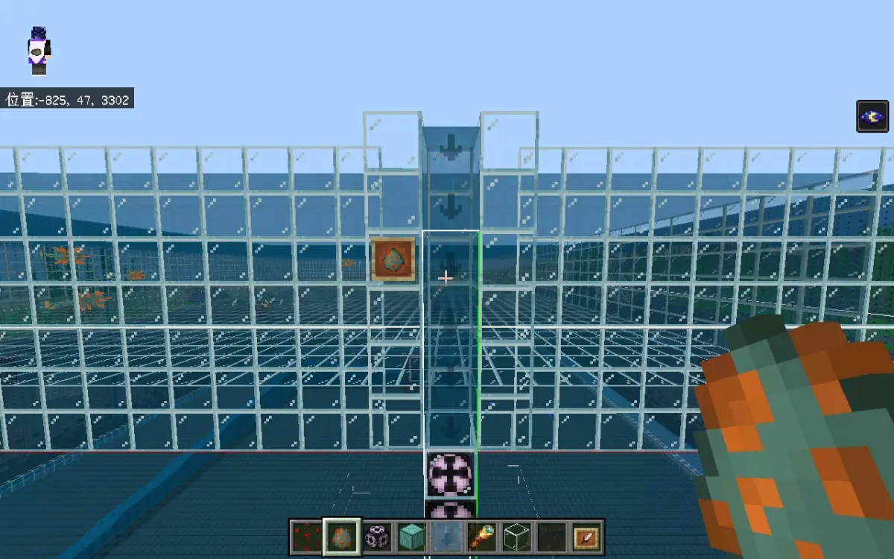
大概就是假如结构生成范围内有两层以上的水（必须是水源或者水流），那么不论下方的方块是什么，都可以进行第二种生成尝试，这种从结果上来看是，把从上往下第二个水方块下方的方块当做可生成方块，然后生成在下方第二个水方块中，而且这种生成方式和之前第一种一样，都具有唯一最高性，也就是如果上方有符合条件的，就绝对不会刷到下方
所以如果你铺了一个水池有很多层水，那么则会选择在结构生成范围内最上层的那层水中刷出来，或者是如果你在保证下方没有为下方提供第一种生成尝试的情况下，只要上方进行了第二种生成尝试，那么由于没有给下方提供第一种生成尝试，即使下方可以进行第一种生成，也不会生成，但是如果去掉上方的第二种，那么下方就会进行第二种生成方式的第一种情况，就是和第一种生成方式相同条件的那种，看上去会有点像进行了第一种生成方式，但实际上那个是第二种生成方式的第一种情况而已，问题不大
三.第二种生成方式与常规的差异
这个首先最明显的肯定就是关于生成方块了，常规的hsa都是需要生成在可生成方块上的，但是这个只需要水就可以，底下可以是任何方块，甚至没有方块也行，但是除此之外，还有一些差别，这给我们一开始测试造成了不小麻烦，问题不大
首先就是关于选点的问题，这第一种生成方式差不多就是常规的hsa选点，虽然有点小差别，不过只要是可以进行生成尝试，并且上表面空气检测通过而且没有覆盖大于一层的水的方块就行，就像这样子一层基岩，能进行生成尝试，并且空气检测通过，没有覆盖两层及以上的水，虽然刷不出来，但是依然可以为第一种生成方式提供生成尝试，问题不大
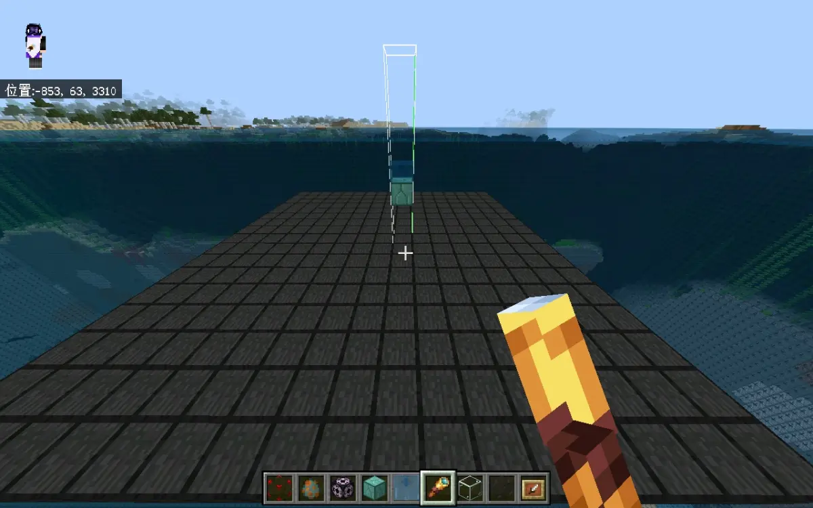
但是这个第二种生成方式和常规的hsa选点不一样，经过我们的测试，能被这种生成方式选点的方块首先必须同样是可以进行生成尝试并且空气检测通过的方块，但是除此之外还有一个额外要求，该方块上方应当覆盖至少两层水，并且保持露天，这样才能为第二种生成方式提供生成尝试，很抽象，问题不大
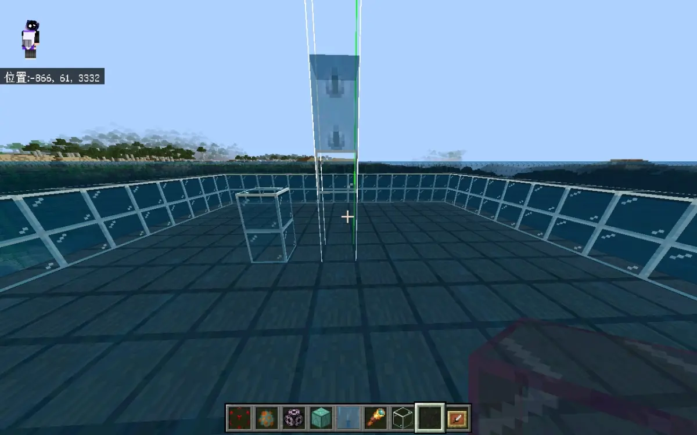
我们需要注意的是，这第二种hsa的选点必须要满足这些条件，假如你只铺一层基岩，或者说基岩上只倒一层水，又或者说你甚至直接铺一层玻璃然后倒两层水，或者说你直接把整个水池遮盖住变成洞穴，这些都是不行的，都会导致这个水池无法为第二种生成方式提供生成尝试，问题不大
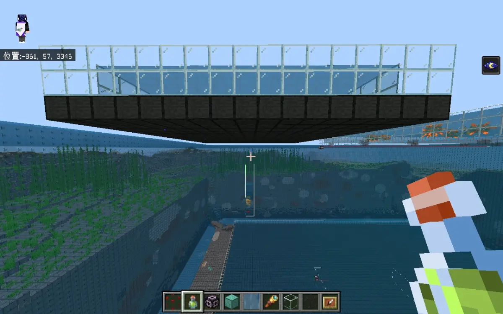
不过这严苛的要求只是针对为第二种生成方式提供生成尝试的水池，生成点本身反而没有这么严格的要求，只要是在hsa范围内并且至少有两层水，那么，不管下方方块是什么，上方是否露天都不影响正常生成，问题不大
另外就是经过我们和曲奇还有8848的测定，这个第二种生成方式选点的范围也和常规hsa一样，选点范围就是hsa本身所在的那个区块，整个海底神殿就是5×5的区块范围，问题不大
四.关于两种生成方式间的关系
这个两种生成方式之间是相互独立的，根据大量实验观察以及曲奇橘猫8848等人的测定，首先就是这两种生成方式，不管是两者单独使用，还是两者混合使用，在选点正常的情况下，对效率都没有什么影响，但是关于二者的排列组合就有点讲究了，这里先来放一张看起来很不合理的效果图，问题不大
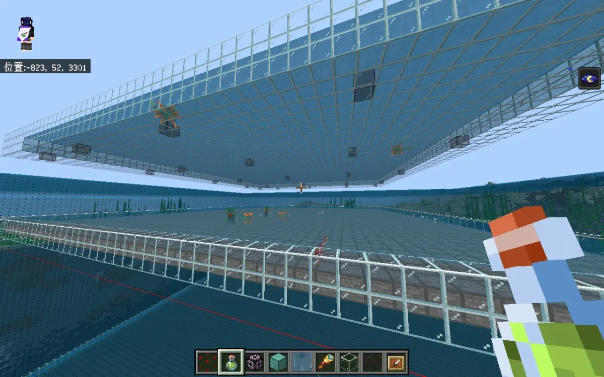
你乍一看可能感觉很正常，但是你仔细看，你就会发现，守卫者居然上下两层都刷了，但是我们都知道，基岩版的hsa是只会刷在最上层的，而且实际上我们可以告诉你，图中确实符合了这个规则，那么，关于原理是什么呢？就听我们讲一讲，问题不大
首先就是这两种生成方式是独立进行的，而且这两种生成方式的生成尝试提供是完全相互阻挡的，但是这两种生成方式的生成条件并不完全相互阻挡（注意是不完全而不是不，下面会介绍），所以这个图里面上方的两层水的那个第二种生成，并不会阻止下方第一种生成的进行，而且由于两种生成方式都有各自提供的生成尝试，所以下方也可以进行第一种生成，问题不大
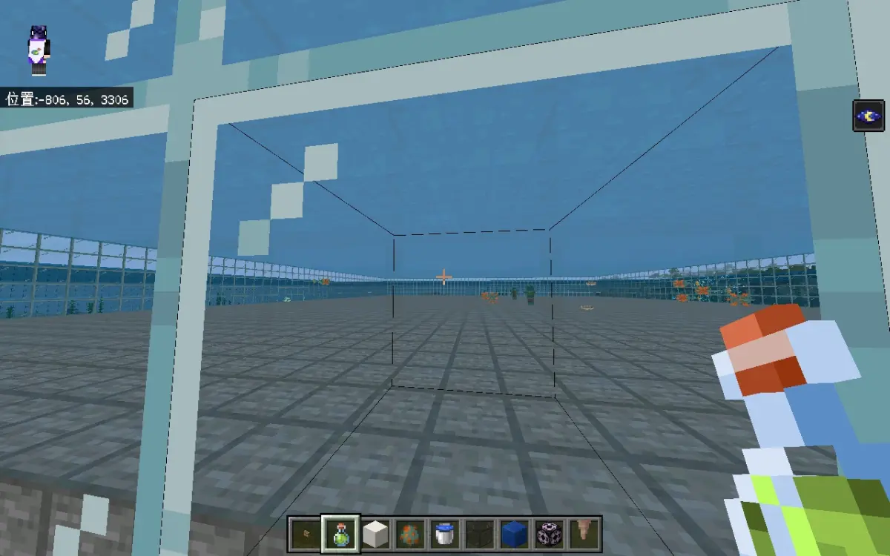
注意在两种生成尝试都有提供的情况下，如果只有一层水以及可生成方块的话，在生成条件上是两种都符合的，但是因为都是生成在同一高度位置，所以看不出太多区别，但是如果是一层可生成方块，上面有两层及以上的水，那么第一种和第二种也是都可以进行，但是这个時候区别就容易看出来了，因为二者都具有最高效应，但是第一种只会生成在可生成方块正上方，第二种可以一直往上生成到更上方的水方块上，所以就会出现第一种生成的直接在底部，第二种生成的从上方沉下来，问题不大
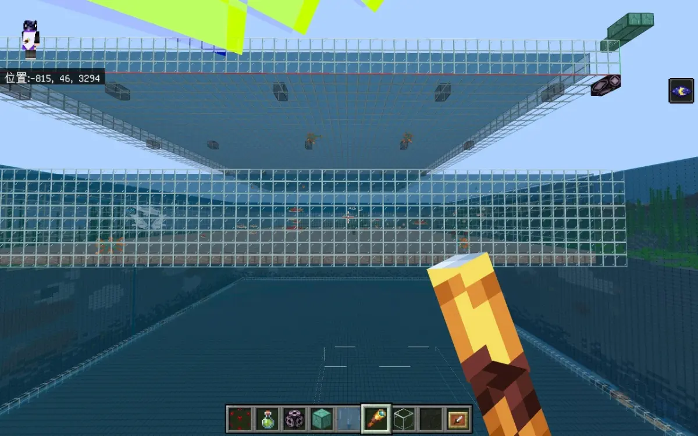
就比如这张图里面，我们是同時提供了一二种生成方式的生成尝试的，上面只能进行第二种，下面从条件上来讲一二种都可以进行，但是因为上面已经可以进行第二种了，所以就对下方的第二种进行阻挡，所以下方只会进行第一种，看是哪一种很简单的办法就是把水层数叠高点，如果是第一种就是直接生成在底部可生成方块上，如果是第二种会生成在上方的水方块上然后沉下来，问题不大
而且这两种生成方式都是各自只会生成在最上层可进行该种生成方式的位置，只不过区别就是，如果上方进行了第一种，那么会直接阻止下方进行尝试，不管第一种还是第二种，但是如果上方进行的是第二种，而下方又正好有可以进行第一种生成的位置，那么就会在上方进行第二种，下方进行第一种，而这两种又刚好各自是可以进行各自生成方式的各自最高点，没有问题，问题不大
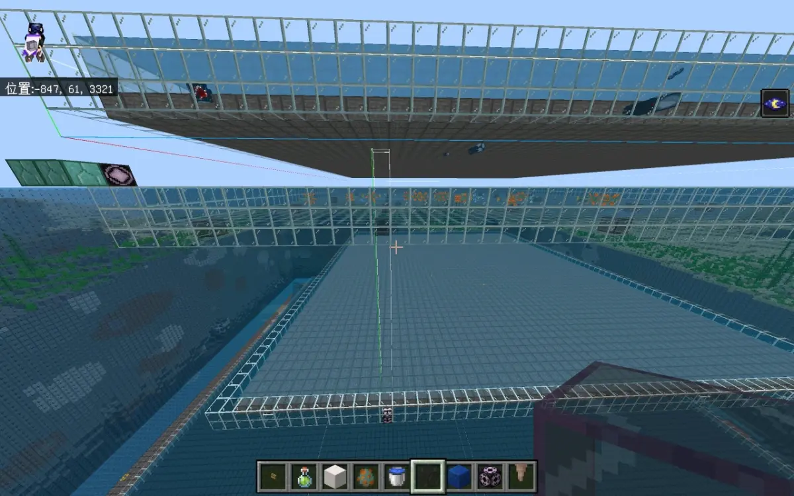
但是需要注意上面说的那种两层都刷的情况都是在水池放在底下的情况，如果像上面这张图当中的这另一种情况，也就是把给那个双层水提供生成选点尝试的水池放在头顶的上方，那么你就会发现，第三层也就是那个单层水可生成方块又不刷了，注意上面那个提供选点的水池在结构生成范围外不会阻止第一种的向下寻找生成点，那这个又是为什么呢？
实际上，这就是我们之前所说的，虽然两种生成方式的生成条件并不完全冲突，但是为两种生成方式提供生成尝试的条件却是完全冲突，而这里上方能提供生成尝试的地方全部都只能提供第二种生成尝试，这就导致虽然从生成条件上来看下方确实可以进行一二种生成，但是由于没有提供第一种生成方式的生成尝试，而第二种生成方式又已经在上方生成了，所以这就导致下方什么都刷不出来，不过如果你把上方那个双层水不可生成去掉，那么虽然还是没有第一种生成方式的生成尝试，但是第二种生成方式却是可以在下方进行了，毕竟下方是同時满足一二种生成方式的生成条件的，只不过因为只有第二种的尝试，所以只能进行第二种生成方式，问题不大
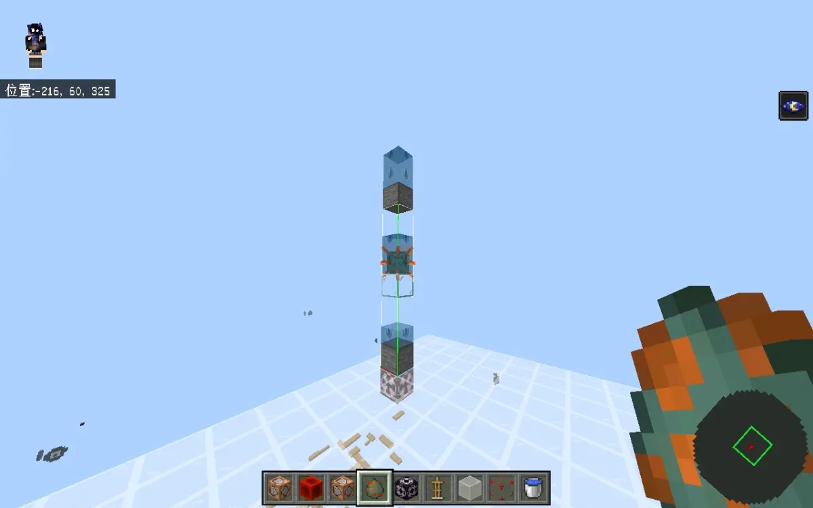
就是像图片里展示的这样，在只提供某一种生成尝试的情况下，即使另一种生成方式满足生成条件，但是由于没有生成尝试，也是无法进行的，这也就是为什么上面那个另一种情况的图当中明明看上去和之前第一张图的双层守卫者差不多的结构，但是最下方那层并不刷的原因，问题不大
可能不是很好理解，我们来放几张只能生成单层的图片，举几个例子，问题不大
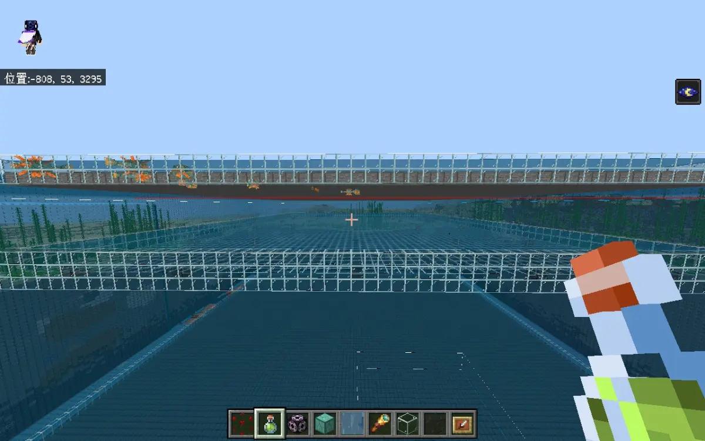
我们首先需要知道，我们之前说的阻挡，并不一定要实际上通过这种生成方式成功生成出来，只要可以进行这种生成方式的生成，那么就可以起到阻挡的效果
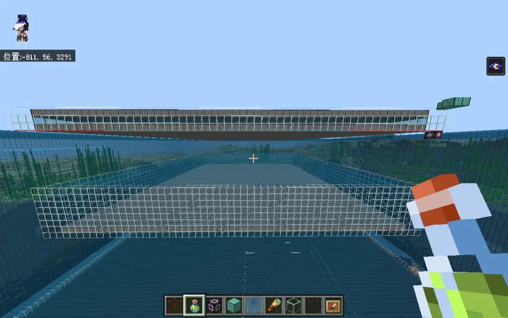
第一张图的话，则是因为很明显的，上方已经是属于两种生成都可以进行，因此的话，不管有没有提供对应的生成尝试，下方是两种都不会进行的，问题不大
第二张图的话，就是我们刚才说的，虽然上方是刷不出来，但是上方已经满足了两种生成方式的生成条件，也就是说上方已经进行了两种生成方式的生成，虽然实际上由于空间检测不通过，导致生成失败，但是因为上方满足两种生成方式进行生成的条件，也就是说上方可以进行两种生成方式的生成，虽然最后因为空间检测没刷出来，但只要可以进行生成，就可以阻挡下方，所以下方就也不管是第一种还是第二种都无法进行，问题不大
不过这里的话需要注意一下，实际上两种方式同時刷的效率基本上没有什么很多的提升，所以的话正常做的话，还是直接做一层就差不多了，问题不大
所以的话就应该比较清晰了，这两种生成方式是各自独立的，而且虽然两者生成尝试之间是会相互阻挡，但是二者的生成条件并不完全冲突，所以如果第二种在上方并且下方也满足第一种的话，那么在生成尝试都有提供的情况下可以两种都进行，不过需要注意关于这个阻挡并不需要实际进行了这种生成，只要可以进行这种生成，那么就会有阻挡的效果，当然，要是没有进行生成，也就是不生成，那自然没有阻挡效果，问题不大
五.总结
根据上面这些大概也基本上就是得出了结论，反正就是守卫者会独立进行两种不同的生成方式，至于具体的机制和关系什么，就自己回顾一下上面的内容吧，这里不再过多赘述，把我们总结的一张流程图给放在这里，问题不大
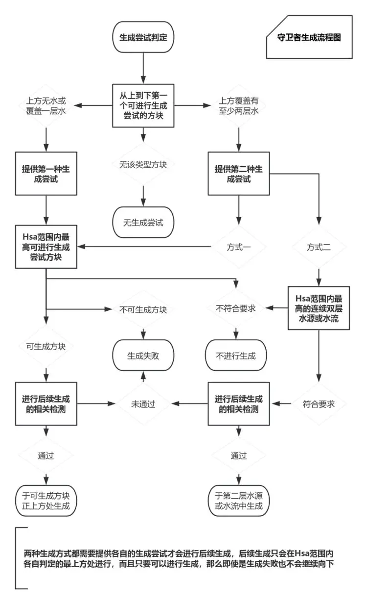
那么就随便讲点，总之这玩意是一坨非常古老的屎了，只不过还能活到现在，也是够抽象的，估计麻将不久之后可能会对hsa动刀，所以现在就趁着还没动的话，把这个专栏发了吧，其实一开始只是想测一下这个远古特性，然后就变成了和曲奇在这里挖屎，然后后面橘猫和8848也加入了进来，然后就一起把这坨屎给挖了出来，然后我们就写了这个专栏，问题不大
曲奇似乎也要写一个，那个里面也有他自己总结的两张图，顺便说一下，他自己那玩意是横着的太长了，所以他手机截不了屏，还是我们在电脑上给他截的，可以期待一下，问题不大
共同测试：@Cookie_531 @橘猫sama @8848yyds
测试版本因为测试人员的版本并不相同所以没有填写，不过也因此导致目前还有一些不能统一的细节上的小差异，如果后续测试完成会第一時间补上，问题不大